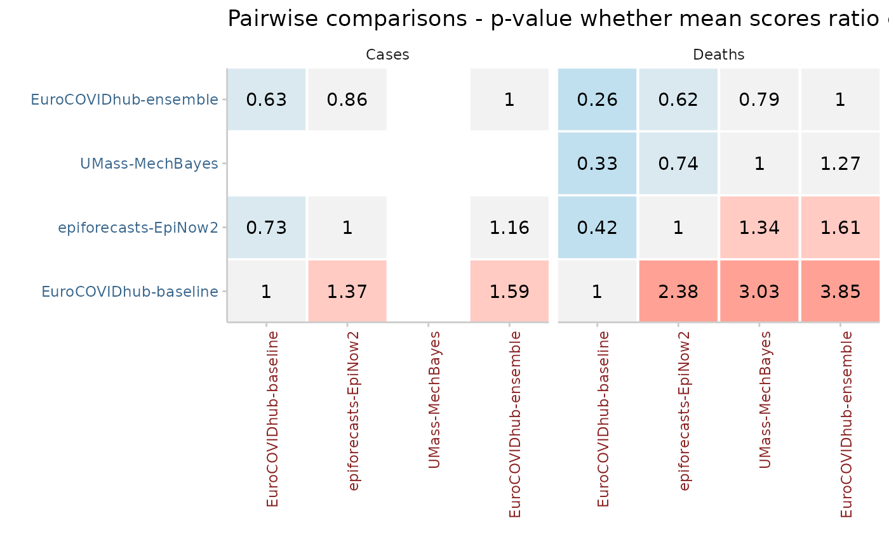

Creates a heatmap of the ratios or pvalues from a pairwise comparison between models
plot_pairwise_comparison(
comparison_result,
type = c("mean_scores_ratio", "pval", "together"),
smaller_is_good = TRUE,
facet_formula = NULL,
scales = "free_y",
ncol = NULL,
facet_wrap_or_grid = "facet_wrap"
)A data.frame as produced by
pairwise_comparison()
character vector of length one that is either "mean_scores_ratio" or "pval". This denotes whether to visualise the ratio or the p-value of the pairwise comparison. Default is "mean_scores_ratio"
logical (default is TRUE) that indicates whether
smaller or larger values are to be interpreted as 'good' (as you could just
invert the mean scores ratio)
facetting formula passed down to ggplot. Default is
NULL
scales argument that gets passed down to ggplot. Only necessary if you make use of facetting. Default is "free_y"
Number of columns for facet wrap. Only relevant if
facet_formula is given and facet_wrap_or_grid == "facet_wrap"
Use ggplot2's facet_wrap or
facet_grid? Anything other than "facet_wrap" will be interpreted as
facet_grid. This only takes effect if facet_formula is not
NULL
df <- data.frame(model = rep(c("model1", "model2", "model3"), each = 10),
id = rep(1:10),
interval_score = abs(rnorm(30, mean = rep(c(1, 1.3, 2), each = 10))),
aem = (abs(rnorm(30))))
data <- scoringutils::quantile_example_data
scores <- scoringutils::eval_forecasts(data)
pairwise <- pairwise_comparison(scores,
summarise_by = "value_desc")
scoringutils::plot_pairwise_comparison(pairwise,
facet_formula = ~ value_desc,
scales = "fixed")
